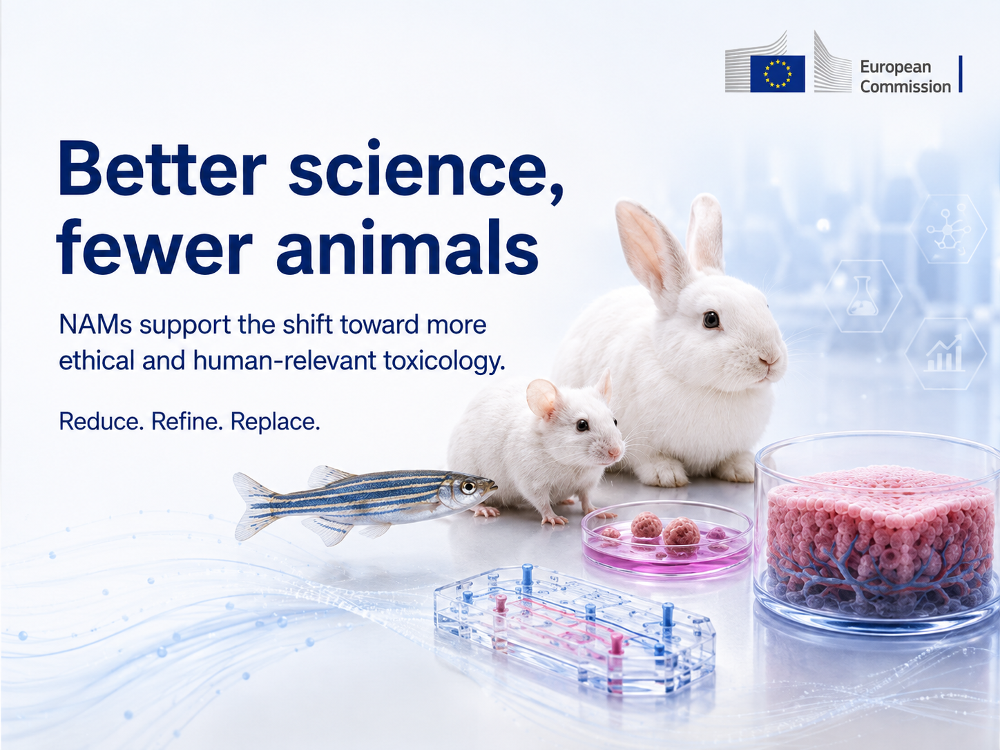

From TSAR records to a research-ready regulatory landscape
This Research Project turns a dated snapshot of 147 TSAR records into a transparent, quality-controlled dataset. It examines which New Approach Methodologies progress, where pathways slow or stop, and how endpoints and methods differ across regulatory outcomes.
Descriptive research dataset · Regulatory status is not a measure of scientific quality
Connecting methods, evidence and regulatory pathways
This dashboard turns a fixed TSAR snapshot into a transparent research resource for exploring how New Approach Methodologies move from scientific development towards regulatory use.
A structured view of the landscape
Bars show the share of all 147 records. These three fields use one value per record, so each column totals 100%.
Regulatory stage
Broad location in the TSAR pathway.
Regulatory status
Latest derived status; not a scientific-quality score.
3R contribution
The primary 3R category recorded for each method.
Choose a dedicated view
Each part of the research dashboard has its own focused page and permanent URL.
Project Overview
Learn why this project studies the pathways from scientific development to regulatory use.
Read project overview →Methodology
Understand the research pipeline, verification approach, limitations and downloads.
Read methodology →Data Guide
Understand how the database works and browse the complete variable codebook.
Open data guide →Explore data
Search and filter all 147 TSAR-listed methods, then inspect individual records.
Open explorer →Analysis Explorer
Build your own graph or table, compare categories and inspect the underlying records.
Build an analysis →Findings
Review regulatory outcomes, hypotheses, evidence status and bottleneck signals.
View findings →Visualizations
Browse all figures supporting the current research questions.
View figures →